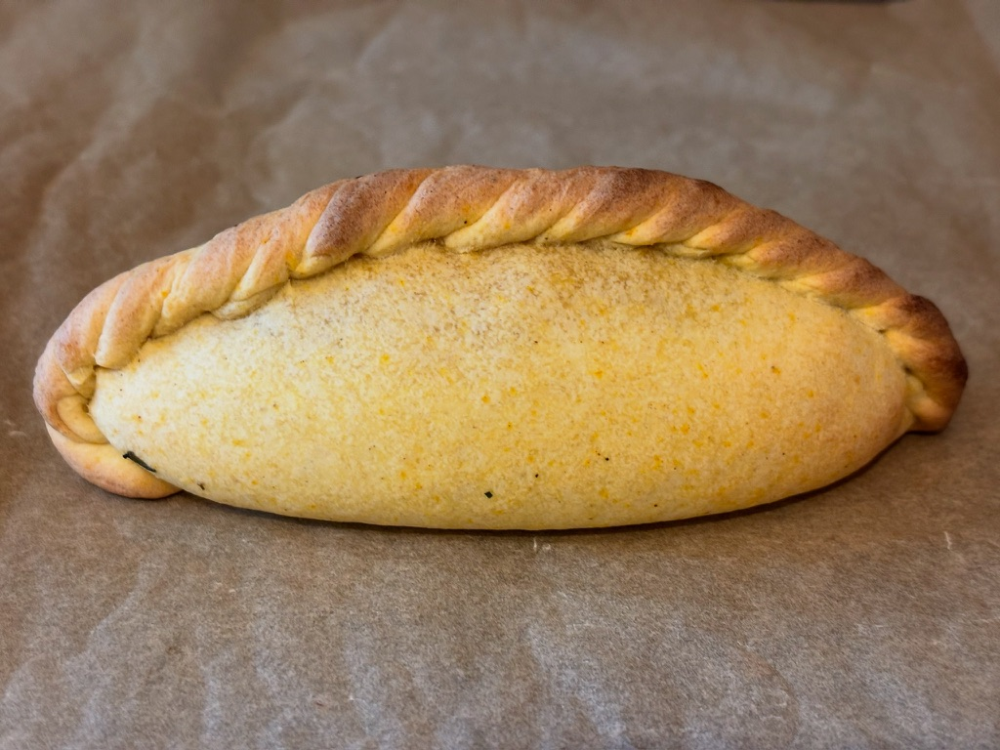

Salteñas
Bolivia's most beloved pastry — handmade fresh every pickup.
What's a Salteña?
A salteña is Bolivia's national street food — think of it as Bolivia's answer to the empanada, but juicier, more complex, and completely its own thing. The dough is slightly sweet and golden; the filling is a slow-braised stew of seasoned beef or chicken, potato, peas, olives, and a touch of Bolivian heat. And there's broth — real broth — inside every single one.
In Bolivia, you eat salteñas in the morning, standing at a corner stall, tilting the pastry upright so the broth doesn't spill. It's a ritual. It's a skill. And it's one of the most delicious things you'll ever eat.
Our salteñas are made with a traditional recipe — slow-braised filling, hand-crimped dough, baked never fried — with the same care it takes to make them at home. Because that's exactly where they're made.

How to eat a salteña
There's an art to it — and once you know it, you'll never go back.
Hold it upright
Always keep the salteña vertical — the filling is juicy and the broth will spill if you tilt it too soon.
Bite the top
Take a careful bite off the crimped top edge to open a small hole — this is your entry point.
Sip the broth
Tilt slightly and sip the warm broth from inside. This is the best part. Don't skip it.
Enjoy the filling
Now eat the rest — savor the tender meat, potato, olive, and that perfectly golden dough.